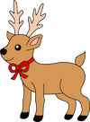

<!doctype html>
<html>
<body><script src="//pencilcode.net/turtlebits.js" crossorigin="anonymous" type="text/javascript"></script><script type="text/coffeescript">
eval(this._start_ide_cs_);

margin = 
  rudolph: 0
  dasher: 0
  dancer: 0
  blixen: 0
  
direction = 
  rudolph: 1
  dasher: 1
  dancer: 1
  blixen: 1

moveOne = (deer, maxMargin) ->
  margin[deer] += direction[deer]
  if margin[deer] == maxMargin
    direction[deer] = -1
  if margin[deer] == 0
    direction[deer] = 1

moveReindeer = ->
  moveOne 'rudolph', 100
  moveOne 'dasher', 19
  moveOne 'dancer', 17
  moveOne 'blixen', 13

forever 30, ->
  do cs
  do moveReindeer
  for deer in ['rudolph', 'dasher', 'dancer', 'blixen']
    write ''
  write ''

</script></body></html>
